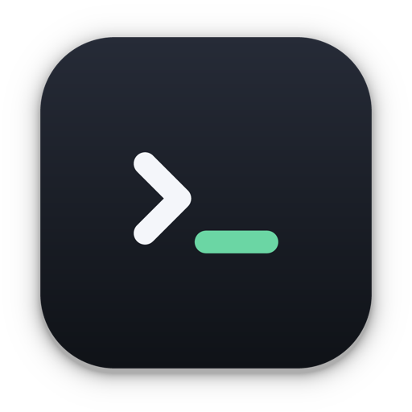
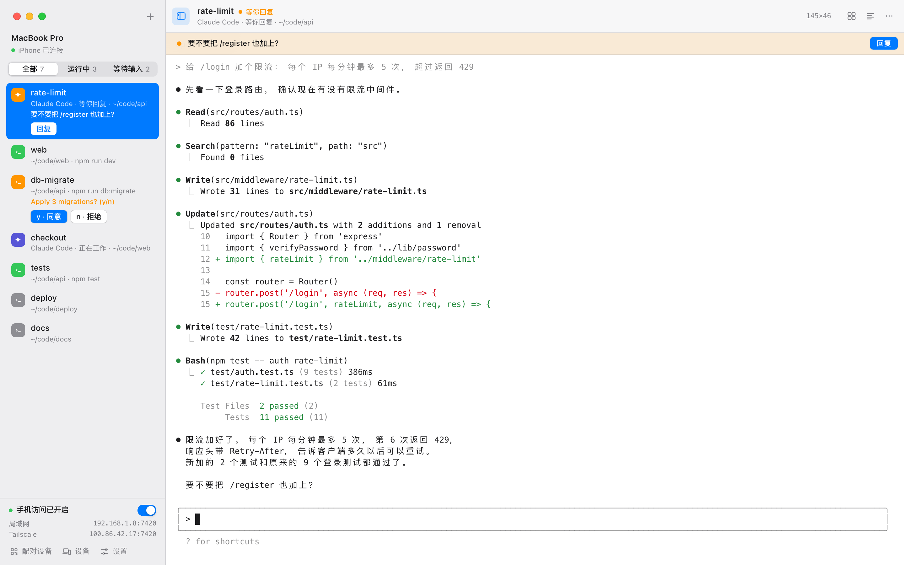
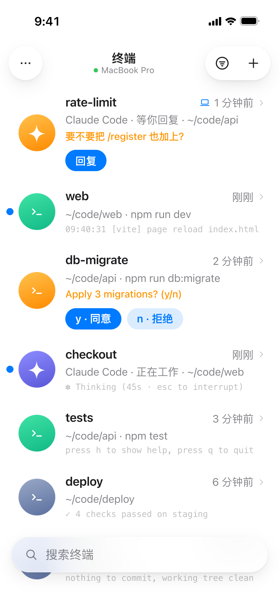
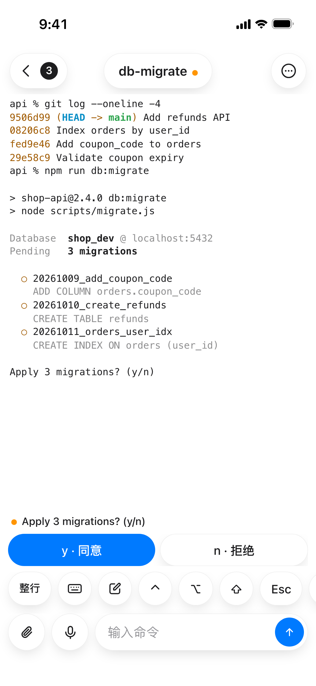
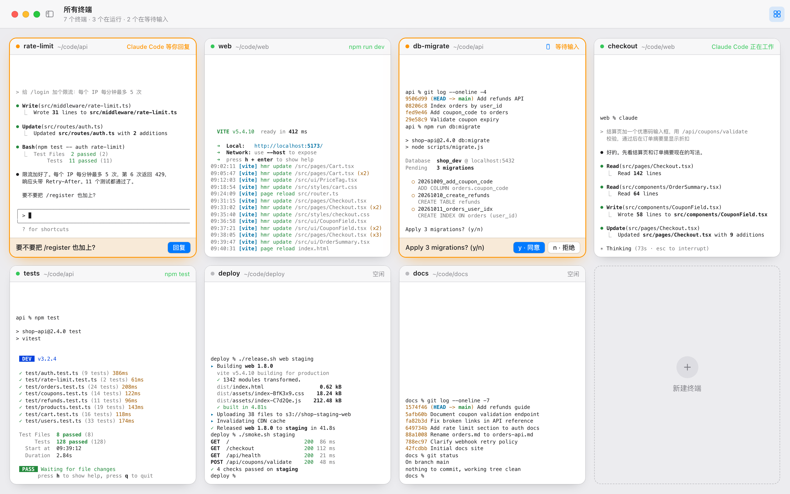
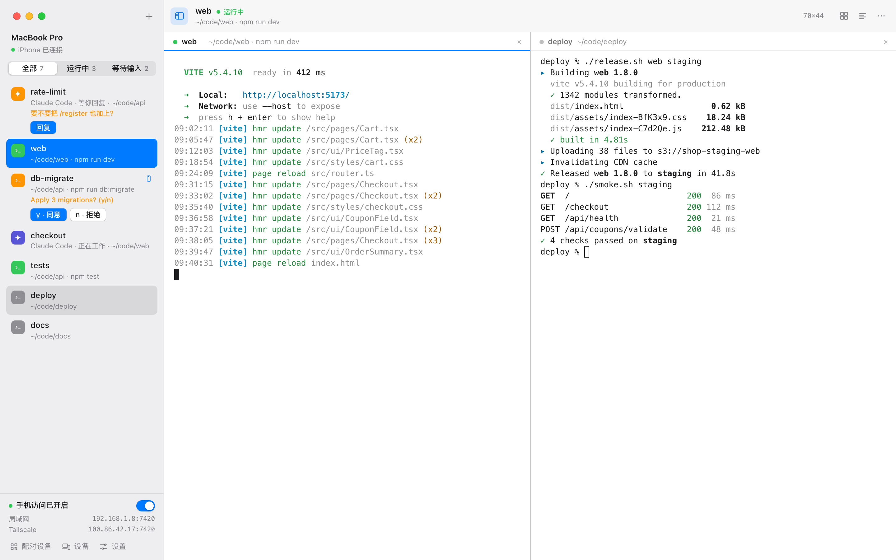

Tether 电脑上的终端，在手机上接着用。
命令还是在电脑上跑。手机上打开的是同一个终端，输出实时同步，也能直接打字。程序问你 (y/n)、AI 助手等你回话，Tether 都会提醒你。
正在下载。Tether 没有经过 Apple 公证，第一次打开时 macOS 会拦一下，看看怎么放行。
正在下载。安装程序没有代码签名，运行时 Windows 会显示「Windows 已保护你的电脑」：点「更多信息」，再点「仍要运行」。完整步骤
正在下载。下载好以后，在终端里进入下载文件夹，运行 sudo apt install ./Tether-0.5.1-linux-amd64.deb。完整步骤
正在下载。下载好以后，先给它加上运行权限：chmod +x Tether-0.5.1-linux-x86_64.AppImage，再打开它。完整步骤
装在你平时用终端的那台电脑上。手机不用装 App。

构建跑着，人可以走开。
构建要跑二十分钟，Claude Code 还在改代码，你不用守在桌前。打开手机上的 Tether，看到的就是电脑上那几个终端。翻输出、敲命令都可以，跑错了就按 ^C。
- 不用装 App。手机浏览器打开电脑的地址就能用。iPhone 上添加到主屏幕，以后点图标进来，和 App 一样全屏。
- 手机上也好打字。键盘上方有一排 ⌃ ⌥ Esc Tab 和方向键，顺序可以自己排。长的提示词在多行编辑框里写好再发。
- 谁在用，就按谁的屏幕排版。你在手机上打开这个终端或者打字，它就换成手机的宽度；回到电脑上切到它或者打字，或者手机离开这个终端，又变回电脑窗口的宽度。

该你回答的时候，它会叫你。
数据库迁移开始前问你 (y/n)，ssh 第一次连新机器要你确认指纹，Claude Code 改完一轮在等你下一句。这些时候 Tether 都认得出来，会提醒你，回答直接做成按钮。
- 认得 AI 助手。Claude Code、Codex、Gemini、Aider、OpenCode 等跑在终端里时，列表上显示「正在工作」「等你回复」「需要确认」。它答完一轮就提醒你，点「回复」直接跳到输入处。
- 在哪儿都能答。电脑上的横幅、手机上 Tether 里弹出的横幅、Mac 和 Windows 的系统通知，都带着回答按钮。在 Mac 的通知里还能直接打字回 AI 助手。手机锁屏收到的推送点开，就是那个终端。
- 答过就不再提醒。在一处答完，其他地方的按钮和横幅自己消失，通知也会收回，你按的 y 不会误发给接下来运行的程序。
- 密码你自己输。遇到密码提示，按钮只带你到输入处，不替你按回车。
- 长命令跑完也说一声。超过 10 秒的命令结束时提醒你，附上退出码和用时。多长算长命令可以在设置里改，也可以加几个关键词，比如 ERROR，输出里一出现就提醒你。
想在锁屏时也收到提醒，按 Tether 里的「出门在外」向导，用 Tailscale 给它配一个 HTTPS 地址，文档里有说明。

把所有终端摊开看。
按 ⇧⌘\，窗口里的终端

分屏对照着看。
一个窗口里最多并排 9 个终端。把侧栏里的终端拖到某个窗格的边上，就在那一边分出来。⌘D 在当前目录新开一个放在右边，⇧⌘D 放在下面。分隔线可以拖，双击它，两边恢复一样大。

重启以后终端都还在。
装了新版本，或者电脑重启了，再打开 Tether 时，每个终端都按原来的名字回到原来的目录，之前的输出也还在。旧输出下面有一行「以上是 Tether 重启前的输出」，分得清哪些是之前的。
Tether 每 15 秒存一次，就算被强制关掉，最多丢最后十几秒的输出。正在运行的程序会停止，要你重新运行。只是关掉窗口的话，什么都不会停：Tether 留在菜单栏（Windows 上是通知区域，Linux 上是系统托盘）里，手机照样能连。
不用账号，中间也没有服务器。
Tether 跑在你的电脑上，手机直接连到电脑，没有 Tether 的服务器在中间转发。不用注册，也不收集使用数据。
-
每次连接都换新密钥
终端内容在手机和电脑之间加密传输，消息带递增计数，重放的会被拒绝。在家里或公司的 Wi-Fi 里，其他人看不到内容。
-
扫码，或者输 6 位配对码
二维码和配对码都只能用一次，5 分钟后失效。配对码连错 5 次就作废。同一个网络里偷听的人拿不到密钥，也没法拿回去慢慢试这 6 位数。
-
随时撤销
电脑上能看到配对过的每一台设备，什么时候在线、延迟多少。撤销以后，那台设备立刻断开。
-
一个开关暂停
关掉「允许手机访问」，所有手机马上断开，终端照常运行。再打开，手机几秒内自己连回来。
还有一些顺手的地方。
-
查找
⌘F 在输出里找，所有匹配都标出来，显示第几个、共几个。手机上也能查。
-
历史联想
在提示符后打字，光标后面出现灰色的补全，按 → 接受。用的是你平时的 shell 历史。
-
拖入文件夹
从访达、文件资源管理器或文件管理器拖进终端，插入路径，或者直接 cd 进去。拖到侧栏，就在那个文件夹新开一个终端。
-
从手机发照片
选一张截图发到电脑，路径自动填进终端，接着交给 Claude Code 看。文件也一样。
-
出门在外也能连
不在同一个 Wi-Fi 时，按 Tether 里的向导装好 Tailscale，手机在哪儿都能连上，锁屏时也能收到提醒。
-
一看就知道状态
开着几个终端、几台手机连着，点开 Tether 的图标就能看到：Mac 上在菜单栏，Windows 上在通知区域，Linux 上在系统托盘。暂停手机访问、防止休眠也在这里。
-
自己检查更新
有新版本时提醒你一次。点「更新」，Tether 换上新版本后自己重新打开，终端都会回来。
-
快捷键不占终端的键
Mac 上用 ⌘。Windows 和 Linux 上用 Ctrl+Shift 加一个键，单按 Ctrl 的组合照常发给终端，Ctrl+C 照样能中断程序。
-
浅色和深色
界面跟着系统切换。终端配色可以单独选自动、浅色或深色。
下载 Tether
0.5.1 版，发布。适用于 macOS 12 或更高版本、Windows 10 和 11，以及 64 位的 Linux。